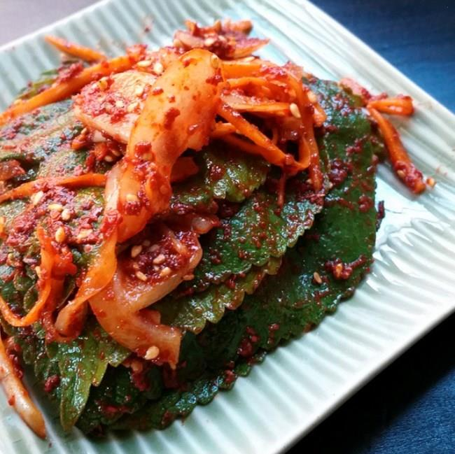

全羅道的代表泡菜是紫蘇葉泡菜
全羅道的代表泡菜是紫蘇葉泡菜是不是沒有聽過也沒有吃過阿
那就讓我們看看要怎麼做出好吃又到地的紫蘇葉泡菜吧!!
主料：芝麻葉100張.洋蔥1顆.紅蘿蔔半條.紅辣椒2支.蔥花少許
輔料：魚露5匙.醬油3匙.辣椒粉6匙.蒜泥2匙.糖2匙.糖漿2匙.白芝麻粒2匙.高湯1/3杯.薑泥半匙
1.將芝麻葉洗好、瀝乾備用。
2.洋蔥、紅蘿蔔切丁，紅辣椒、蔥切成碎末一起放入盆子裡。
3.之後在盆子裡放入醃料魚露、醬油、辣椒粉、蒜泥、糖、糖漿、白芝麻粒、高湯及薑泥後充份的攪拌後備用。
4.之後再將醃料塗在芝麻葉上
5.邊塗邊將芝麻葉放入保鮮盒內，完成後就放入冰箱內冰存1天後，再來食用∼∼∼味道會更好唷！
首頁
慶尚道
京畿道
心得